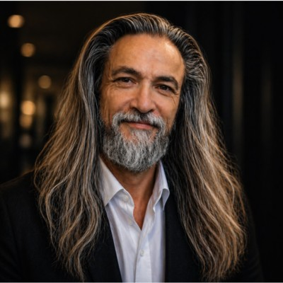

Le fondateur
Jean-Luc Manzaroli débute comme ingénieur d'affaires en gestion de patrimoine privé dès 2005, avant de fonder puis de céder Patrimonialis, un cabinet de conseil en gestion de patrimoine indépendant. Certifié AMF, son parcours traverse ensuite plusieurs univers professionnels avant de converger vers Krysopée — une maison qui réunit aujourd'hui le trading pour compte propre, la transmission de méthode et le conseil en stratégie patrimoniale.
Cette diversité de parcours n'est pas un détour : c'est la conviction qu'une vision patrimoniale solide se nourrit de disciplines différentes — la rigueur des marchés, la structure du droit et de la fiscalité, et une attention portée aux dynamiques moins visibles qui gouvernent les décisions humaines.
Krysopée — Nemini Teneri